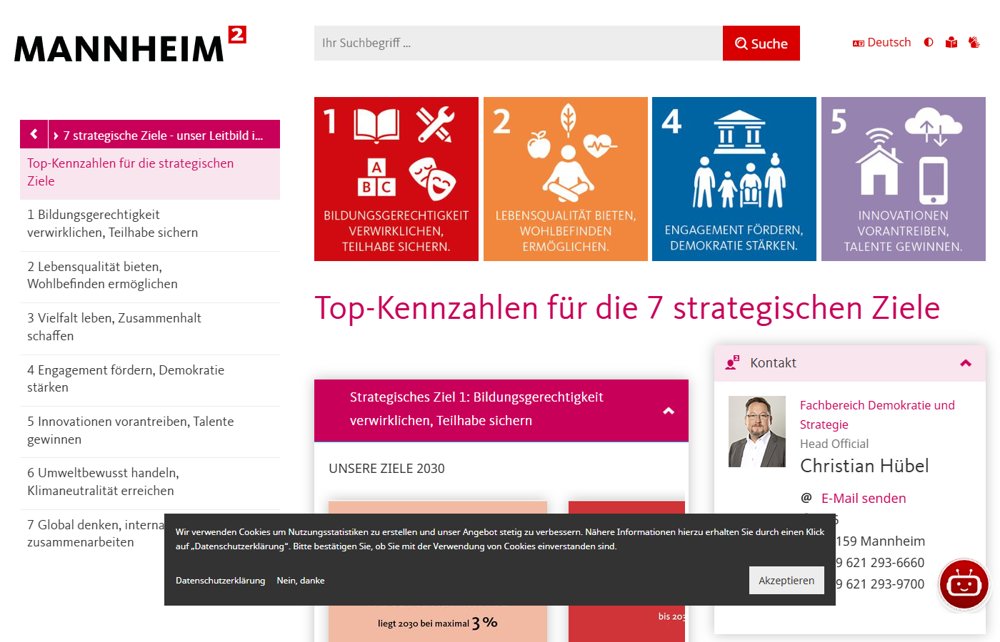
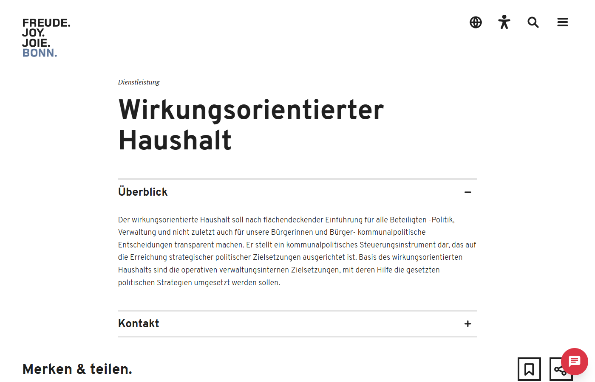
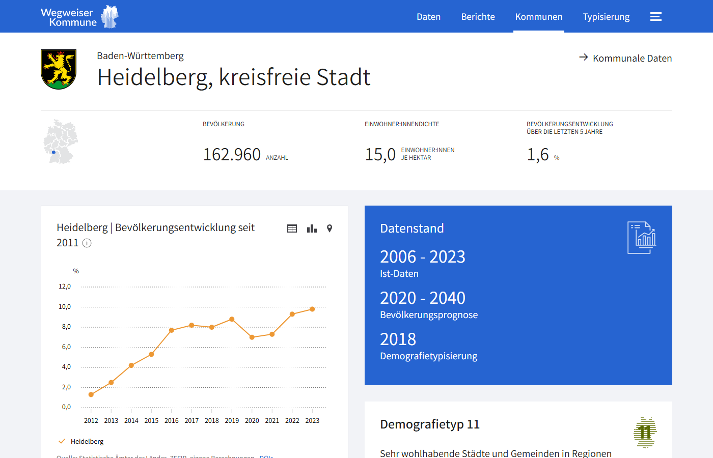
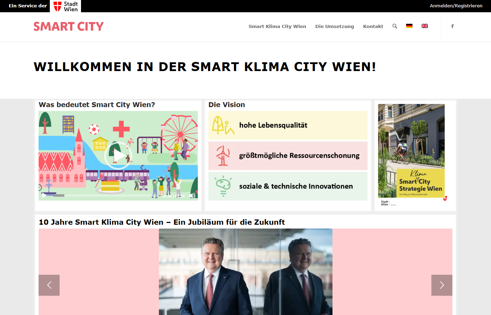
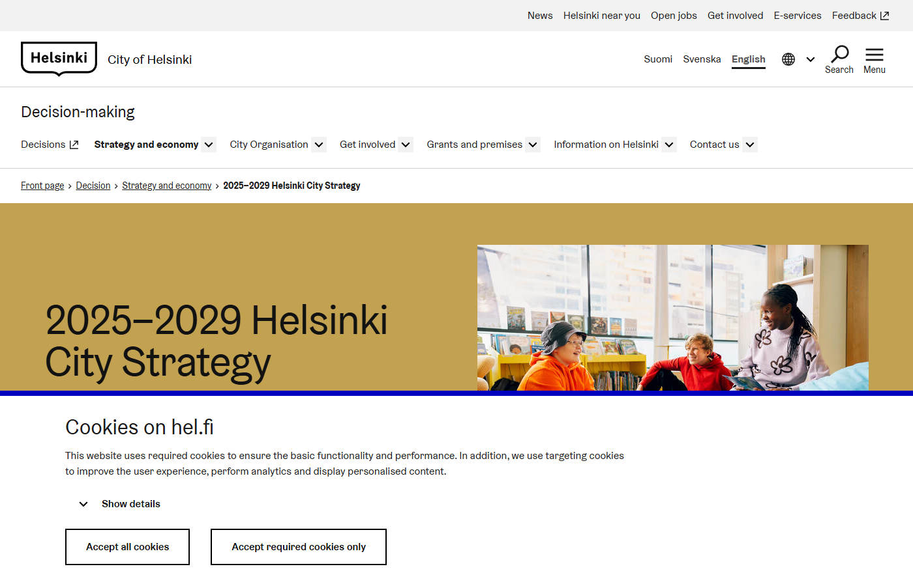
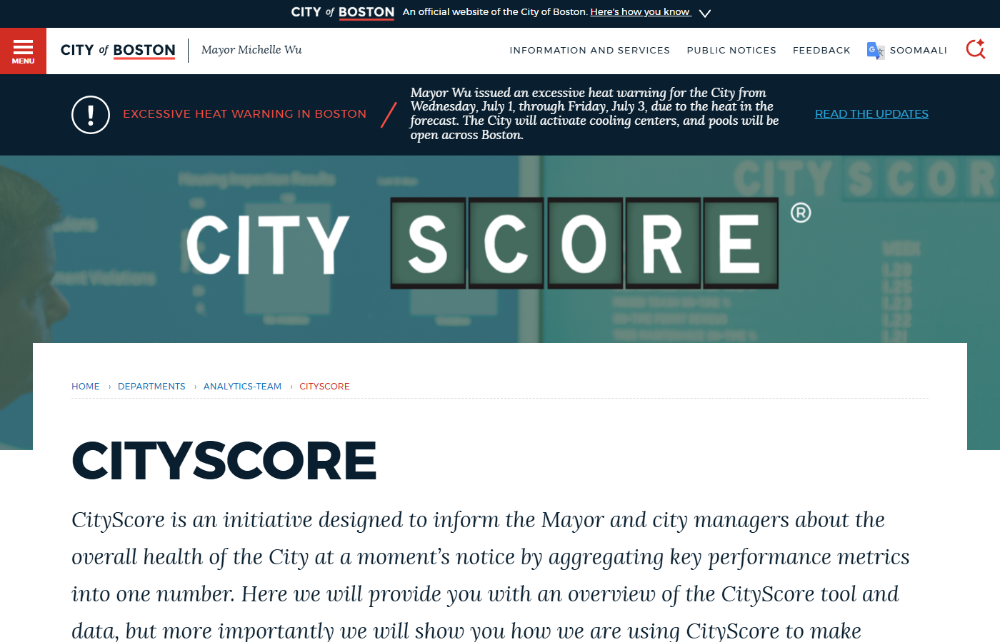
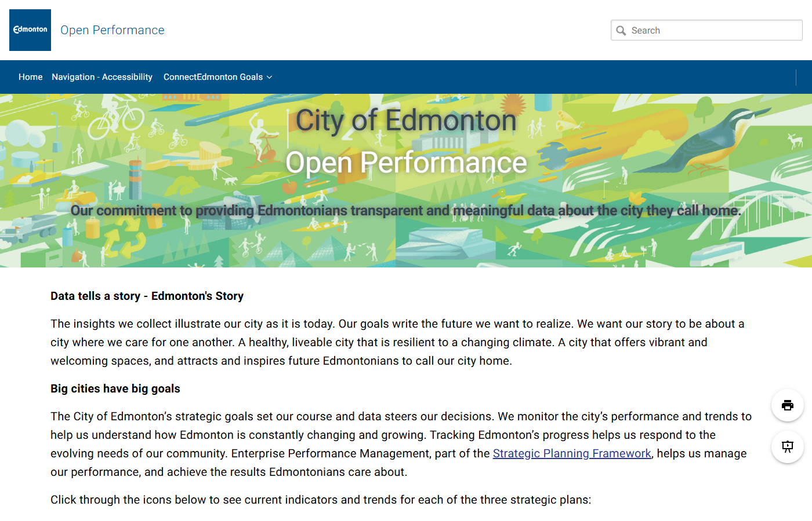

Drei Kernaussagen
Datenfundierte Beobachtungen aus den Haushaltsplänen 2019/20 bis Nachtrag 2026. Klick links auf einzelne Sheets für Details.
1. Defizit ist strukturell
Mittelfristplan 2027–2029 zeigt anhaltend –49 bis –52 Mio. €. Auch nach Nachtrag bleibt das Problem.
2. Hebel konzentriert
Drei Teilhaushalte verursachen 60 % des Defizits. TH 20 und 50 sind rechtlich gebunden — Hebel liegt außerhalb Top-3 oder gezielt in TH 51 (Jugendamt).
3. Schulden steigen schneller als Defizit
+413 Mio. € geplanter Schuldenaufbau bis 2029. Kombination aus Defizit- und Investitionsfinanzierung über Kredit ist der Treiber.
Ordentliches Ergebnis 2017–2029 (Mio. €)
Ist-Werte (vorl. Abschluss): 2017, 2022. Nachtrag: 2026. Mittelfristige Finanzplanung (MiFri): 2027–2029. Alle übrigen Jahre: Plan bzw. Plan (Beitritt). Hover über einen Punkt zeigt den Typ.
Schuldenstand Kernhaushalt 2018–2029 (Mio. €)
Nachtrag: 2026. MiFri: 2027–2029. Alle übrigen Jahre: Plan-Werte aus dem jeweils aktuellsten Haushaltsplan. Hover für Typ-Anzeige.
Top-10 Teilhaushalte nach Defizit 2025 (Mio. €) — TH FW ausgeblendet
Heatmap Produktbereich × Teilhaushalt
Wo gibt die Stadt Geld aus? Matrix zeigt Anteile der ordentlichen Aufwendungen pro Kombination Produktbereich (Zeile) × Teilhaushalt (Spalte). Klick auf eine PB-Zeile öffnet die zugehörigen Produktgruppen.
Kostenarten × Teilhaushalt
Dieselben Teilhaushalte, dieselbe Reihenfolge — aber aufgeschlüsselt nach Aufwands- und Ertragsarten aus dem Ergebnishaushalt (Sheet 02). Filter oben steuern beide Tabellen. TH FW (Allgemeine Finanzwirtschaft) sowie Rest/Brücke sind hier nicht enthalten.
KPIs
Strukturelle Kennzahlen aus dem Vorbericht (Kap. 6) und dem Schulden-/Liquiditätsteil (Kap. 4). Ampel-Schwellenwerte sind heuristisch und dienen der Kommunikation — sie sind kein normativer Sollwert.
Positivbeispiele anderer Städte
Acht Best-Practice-Beispiele für Performance-Dashboards, interne Steuerung und Bürger-Transparenz — Auswahl aus einer Long-List von ~28 Kandidaten nach 6 Kriterien (K1–K6). Quelle: Recherche_PositivBeispiele\PositivBeispiele für Städtische Performance Dashbaord.pdf, Stand 28.06.2026.
Zusammenfassung
Was gesucht wurde: Inspiration für drei Themenfelder — Wirkungs-/Leistungsmessung über Dashboards, interne Steuerung über Strategy→KPI-Frameworks, Bürger-Transparenz über Open Budget. Bewusst nicht im Fokus: Bürgerhaushalt/Partizipationsbudget.
Drei wichtigste Muster:
- Die besten Steuerungssysteme beginnen mit einer Strategie, nicht mit Daten. Mannheim, Wien, Helsinki und Edmonton leiten Kennzahlen aus einem politisch beschlossenen Zielsystem ab. Reine Daten-Dumps ohne Zielbezug erzeugen Transparenz, aber kaum Steuerungswirkung.
- Wirkungsmessung (Outcomes) ist seltener als Leistungsmessung (Outputs). Fast alle Tools zeigen, was eine Stadt tut und ausgibt — nur wenige verknüpfen das systematisch mit Wirkung. Boston, Bonn und Edmonton sind hier am weitesten.
- Pflege entscheidet über Nutzen. Mehrere prominente DE-Bürger-Transparenz-Projekte sind „Karteileichen" geworden (z. B. offenerhaushalt.de = „Public archive"). Aktiv gepflegte, in die Verwaltung eingebettete Systeme sind nachhaltiger.
Mannheim 🇩🇪
Blaupause
- Lückenloser Strang: Leitbild → 7 strat. Ziele → Dezernat → Managementziele → Kennzahlen → Vorbericht.
- Eigene Stabsstelle „Strategische Steuerung" pflegt das System dauerhaft.
- Jährlicher Voluntary Local Review macht Zielerreichung öffentlich.
Bonn 🇩🇪
Software „von der Stange"
- Echte Interaktivität: Drill-down durch alle Haushaltsebenen, Ampelpfeile für Abweichungen, Erklärvideos für Laien.
- Bonn ordnet SDGs als eine der wenigen DE-Kommunen systematisch Haushaltsprodukten zu (Modellprojekt LAG 21 NRW + KPMG).
- Standardsoftware Axians IKVS — laut Anbieter 300+ Kommunen nutzen sie, sofort beschaffbar.
Wegweiser Kommune 🇩🇪
Quick Win — Außenblick
- Sofort nutzbares Benchmarking — vergleicht HD direkt mit Mannheim, Karlsruhe, Freiburg etc. — kostenlos, ohne Eigenaufwand.
- Methodische Transparenz + Open Data (auch auf GovData gelistet).
- Demografietypen (11 Typen) gruppieren vergleichbare Kommunen — „faire" Vergleiche.
Wien 🇦🇹
Methodisch · nicht im Maßstab
- 7 Leitziele, 65 Einzelziele in 12 Zielbereichen — vollständige SDG-Verankerung.
- Vorbildliche Governance: Monitoring bindet alle Magistratsdienststellen, städt. Unternehmen und Beteiligungen ein.
- „Lernende Strategie": Monitoring-Ergebnisse führen explizit zu Zielanpassungen.
Helsinki 🇫🇮
Governance-Vorbild
- Pro Ratsperiode neu beschlossene Stadtstrategie (Strategie 2025–2029 „A Helsinki we can be proud of", Aug 2025); enge Kopplung an politischen Zyklus.
- Strategie steuert direkt das jährliche Budget („shared budgetary targets").
- Transparente, qualitative und quantitative Indikatoren öffentlich auf hel.fi.
- Quartalsberichte benennen explizit Erfolge und Herausforderungen.
Boston 🇺🇸
Konzept stark · Pflege fraglich
- Radikale Verständlichkeit — eine einzige Zahl, sofort einordbar.
- Dokumentierte Steuerungswirkung (EMS-Reaktionszeit → Budgetentscheidung 2017 für mehr Rettungssanitäter).
- Drill-down auf Treiberkennzahlen sichtbar.
- Algorithmus als Open-Source-Toolkit auf GitHub — nachnutzbar ohne Lizenzkosten.
- Seit Jan 2016 durchgehend gepflegt vom „Citywide Analytics Team".
Edmonton 🇨🇦
Dashboard-Vorbild · CA-Kontext
- Explizite Strategie-Kopplung — Indikatoren hängen an ConnectEdmonton-Zielen.
- Ampel-Status (Meets / Near / Needs Improvement / Measuring / Collecting Data) macht sofort sichtbar, wo die Stadt liegt.
- 300+ verknüpfte Datensätze, teils Echtzeit.
- Aufbaukosten transparent dokumentiert (gesamt CAD 1,33 Mio.) — seltene Kostentransparenz.
Tallinn / e-Estonia 🇪🇪
Digital-Nordstern · nicht Haushalt- X-Road (dezentraler sicherer Datenaustausch), Once-Only-Prinzip, Datentracker (Bürger sieht, wer auf seine Daten zugegriffen hat).
- Vertrauen durch Transparenz: laut London OTI vertrauen 95 % der Esten dem Staat ihre Daten an.
- OECD Digital Government Index 2022 = 0,74 (OECD-Schnitt 0,61).
- Tallinn 2035 als langfristige Strategie; neues Verwaltungs-Dashboard seit 2025.
Einschränkungen — was die Beispiele nicht sind
- Mannheim hat das Strategie-Gerüst (7 strat. Ziele, Gemeinderatsbeschluss), aber die TOP-Kennzahlen-Seite ist eine statische Auflistung — kein interaktives Dashboard, keine Zeitreihen, keine Ampel-Status. Übertragbarkeit auf HD ist konzeptionell stark, technisch banal.
- Bonn nutzt eine externe Software-Plattform (Axians IKVS) — der Drill-down funktioniert, ist aber stark standardisiert (kaum HD-spezifische Anpassung möglich). SDG-Verknüpfung ist als Modellprojekt 2022/23 dokumentiert, aktueller Pflegestand seither unklar.
- Wegweiser Kommune liefert Demografie- und Sozialdaten, kaum Finanzkennzahlen. Datenstand teilweise 2023 — für Haushaltsvergleiche unzureichend. Eher „Außenthermometer" für Bevölkerungsstruktur als für Finanzsteuerung.
- Wien ist ein Stadtstaat mit ~2 Mio. EW und eigenem Magistratsapparat — methodisch lehrreich, im Maßstab nicht 1:1 auf HD übertragbar. Smart-City-Monitoring zeigt 2024er-Stände, nicht alle Indikatoren werden quartalsweise gepflegt.
- Helsinki hat die schönste Kopplung Strategie ↔ Ratsperiode, aber die öffentlich einsehbaren Indikatoren bleiben qualitativ (Texte, weniger Zahlen). Die Strategie-Seite ist primär Kommunikation, nicht operatives Steuerungs-Dashboard.
- Boston CityScore zeigt auf
boston.govaktuell den Wert 0 ohne Datumsangabe — Indiz, dass der ursprüngliche Aggregat-Score nicht mehr aktiv gepflegt wird. Das Konzept bleibt vorbildlich, das System selbst ist offenbar in Frage gestellt. - Edmonton Open Performance ist das technisch ausgereifteste Dashboard der Auswahl — aber: kanadischer Provinz-/Bundesstaat-Kontext, andere Rechnungslegung, andere Datenquellen. Übertragung erfordert konzeptionelle Übersetzung.
- Tallinn / e-Estonia ist Digitalisierungs-Vorbild, kein Haushalts-Transparenz-Vorbild. e-estonia.com ist primär Werbeseite für den Standort. Für HD-Haushaltssteuerung als „Nordstern" zu abstrakt — eher Bezugspunkt für eine spätere Digitalstrategie.
Was für HD wirklich tragfähig ist
- Mannheim als Strategie-Blaupause: gleiches Landesrecht, gleiche Doppik, direkt anschlussfähig. Der Weg „7 strat. Ziele → 52 Kennzahlen → Vorbericht" ist der konkreteste 1:1-Bezug.
- Bonn als Beleg, dass ein interaktiver Haushalt für DE-Mittelstädte ohne Eigenentwicklung beschaffbar ist (Standard-Software, ~300 Nutzer-Kommunen).
- Edmonton als Inspiration für Dashboard ↔ Strategie-Kopplung — Ampel-Status pro strategischem Ziel ist methodisch übertragbar, unabhängig von der Software.
- Die übrigen fünf Beispiele liefern Bausteine (Mannheim die Governance, Helsinki den Ratsperiode-Takt, Boston die Verdichtungsidee, Wien die Beteiligungs-Einbindung, Tallinn die Digital-Richtung) — keines davon eine Komplettvorlage.
Stand der Live-Webseiten: 30.06.2026 / 01.07.2026. Boston CityScore-Wert „0" ohne Datum ist ein Warnsignal für Pflegestand. Mehrere DE-Bürger-Transparenz-Projekte (z. B. offenerhaushalt.de) wurden inzwischen aufgegeben — aktive Pflege ist kein selbstverständliches Kriterium und sollte vor jeder Übernahme erneut geprüft werden.
Volldokument: PositivBeispiele für Städtische Performance Dashbaord.pdf (19 Seiten, ~8,5 MB) im Projektfolder Recherche_PositivBeispiele\.
Vergleichsstädte — Kennzahlen-Recherche
75 kommunale Kennzahlen aus externen Quellen (StaLa BW, Bertelsmann Wegweiser, Stadtkämmereien) als Außenthermometer für Heidelberg. Liegt separat zur Master-Excel-Datei, weil Methodik (Status-Spalte, Spannen, gemischte Bezugsgrößen) das schmale TH-Long-Format sprengt.
KPI-Benchmark — Heidelberg vs. Median vergleichbarer Städte
Zeilenweise KPI, gruppiert nach Themen-Kategorie. Ampelfärbung der HD-Spalte gegen den Median: grün = HD ≤ Median (günstig), gelb = ±10 % um Median, rot = deutlich über Median. Bei Kennzahlen, wo hoch gut ist (Kostendeckungsgrad, Grünanlagen-m²/EW etc.) wird die Logik umgedreht. Zellen mit „—" bedeuten: HD-Wert nicht direkt in Master-Excel oder Wegweiser hinterlegt. Hover auf KPI-Namen zeigt Beschreibung, Quelle, Interpretationshinweis.
| Kennzahl | Heidelberg | Median | Min | Max | Vergleichsstädte / Bezug | Status |
|---|
Was steckt drin?
- Sheet 00 — Lesehinweise: Methodik, „kein normativer Sollwert", 4 Vergleichbarkeits-Caveats.
- Sheet A — Pro-Kopf-Kennzahlen (27): Personalaufwand/EW, Steuern pro EW, PB-weise Ausgaben €/EW, Bibliothek/Theater/ÖPNV-Pro-Kopf-Zuschüsse, …
- Sheet B — Stückkosten & Mengen (47): €/Schüler, €/Fall HzE, Kostendeckungsgrade Bäder/ÖPNV/Friedhof, VZÄ je 1.000 EW, m²/EW Grünfläche, …
Status-Taxonomie der Werte
Heidelberg-Anker (eingebaut)
Wann nutzen?
Bei Aussagen wie „Heidelberg gibt für X überdurchschnittlich viel aus" liefert Sheet B / A den empirischen Median + Spanne. Bestes ausgebautes Muster: Zeile 47 Blatt B (Grünanlage) berechnet MEDIAN / MIN / MAX live über 6 BW-Städte.
Offene Lücke
Stadtkreis-Pro-Kopf-Vorlagen-Zeilen (PB 11 / 12 / 42 / 51–52 / 54 / 55 / 56 / 57) noch zu befüllen aus StaLa BW GENESIS Tabelle 71717.
Excel-Datei öffnenDaten\HD_Kennzahlen_Staedtevergleich.xlsx
Warum nicht im Master-Excel?
- Eigene Methodik-Spalte (Status), Spannen (Min/Max/n), gemischte Bezugsgrößen (Pro-Kopf / Stückkosten / Mengen / Quoten) — passt nicht ins schmale TH-Long-Format.
- Master-Excel
01_HD_Haushaltsdaten.xlsxbleibt fokussiert auf HD-Haushaltszahlen aus den 6 PDF-Quellen. - Diese Datei ist die Source of Truth für Außenvergleiche und wird bei Bedarf gezielt zitiert — nicht gemergt.
Datenstruktur & Lücken
Wie der Haushalt aufgebaut ist — welche Ebenen, Dimensionen und Quellen es gibt — und wo die Datenbasis Lücken hat.
Ergebnishaushalt
Erfasst ordentliche Erträge (Steuern, Gebühren, Zuweisungen) und ordentliche Aufwendungen (Personal, Sach- und Dienstleistungen, Transfers). Differenz = Ordentliches Ergebnis.
Finanzhaushalt
Erfasst Einzahlungen und Auszahlungen aus laufender Verwaltung + Investitionen + Finanzierungstätigkeit (Kredite, Tilgungen). Steuert Liquidität und Verschuldung.
Der Haushalt ist in fünf Ebenen gegliedert — von einer Zahl (Gesamthaushalt) bis zu ~373 Einzel-Produkten. Nach unten wird die Sicht detaillierter, aber auch datenlückiger, weil die Haushaltspläne Beträge nur bis zur Produktgruppen-Ebene ausweisen.
Gesamthaushalt
Die Stadt als Ganzes — eine Zahl pro Kennzahl und Jahr
Teilhaushalte (Ämter)
Verantwortlichkeits-Sicht — Kämmereiamt, Jugendamt, Feuerwehr etc.
Produktbereiche
Aufgaben-Sicht — Innere Verwaltung, Sicherheit, Bildung, Soziale Hilfen …
Produktgruppen
Feinere Aufgaben-Ebene — Grundschulen, Kindertageseinrichtungen, Straßenbeleuchtung …
Produkte
Konkrete Leistung/Angebot — im HD-Haushalt nur Stammdaten, keine Beträge im PDF
Legende: Voll alle Daten im Excel-Master vorhanden · Teilweise Aggregate + Detail für 25 von 41 TH · Nur Stammdaten Codes und Bezeichnungen vorhanden, aber Beträge im PDF nicht ausgewiesen
Zeit-Dimension
Alle Kennzahlen sind über 13 Jahre 2017–2029 zeitgereiht — mit unterschiedlichem Status je Jahr.
Kostenarten (Aufwand)
Der Aufwand wird in 4 Blöcke gegliedert. Transferaufwand ist mit Abstand am größten.
Personal / Stellen
Stellenpläne für 4 Plan-Jahre (2019, 2021, 2023, 2025) über ~50 TH — Beamte, Beschäftigte, Gesamt.
Investitionen
Drei Layer: TH-Aggregat (41 TH) + Bauliche/Technische Verbesserungen (32 Maßnahmen) + Investitionsförderung (23 Maßnahmen) × 2025/26.
Schulden & Kennzahlen
Schulden-Trend 2018–2029 (Kernhaushalt vs. Stadtkonzern) + 17 Finanz-Kennzahlen aus dem Vorbericht (Eigenkapitalquote, Anlagendeckung, Zinslastquote …).
Vergleich außerhalb HD
6 Städte (HD, KA, MA, FR, TÜ, DA) × 10 Kernhaushalts-Kennzahlen aus Bertelsmann Wegweiser Kommune 2023 — direkt vergleichbar.
Was die Datenbasis bewusst nicht abdeckt — und was das für Aussagen bedeutet. Vollständig dokumentiert in Daten/03_Transparenzluecken.md.
Ist 2024 fehlt komplett
HochDer Jahresabschluss 2024 der Stadt Heidelberg ist noch nicht veröffentlicht. Jüngstes belastbares Ist-Jahr = 2023. Voraussichtlich erst mit Haushaltsplan 27/28 (Herbst 2026) verfügbar.
Eigenbetriebe & Beteiligungen
HochWirtschaftspläne von Theater, IBA, Bäder, Klinikum, HVV etc. liegen außerhalb der 6 Haushalts-PDFs. Sheet 10 ist leer.
Investitionsprogramm 2024–2029 (Anlage II g)
MittelEinzelmaßnahmen über 6 Jahre nicht extrahiert (Doppelseiten-Layout, Spezialparser nötig). Nur 2-Jahres-Sicht 2025/26 im Sheet 06.
PG-Detail für 16 kleine TH
Mittel16 von 41 Teilhaushalten (Stabsstellen, kleine Ämter) haben in Q4 keine „Gesamtbudget nach Produktgruppen"-Tabelle. Detail nur über Mapping rekonstruierbar.
Produkt-Ebene ohne Beträge
Mittel373 Produkte sind mit Code + Kurzbeschreibung erfasst. Q4 hält Werte aber nur bis Produktgruppen-Ebene — Einzel-Produkt-Beträge existieren im PDF nicht.
Stellen-Ist (Vakanzquote)
NiedrigSheet 07 enthält nur Plan-Stellen aus Haushaltsplan Teil C. Tatsächliche Besetzung liegt nicht im PDF.
Rechnungsergebnisse 2018 / 2020 / 2022
NiedrigIst-Werte für die Zwischenjahre nicht in den Haushaltsplan-PDFs enthalten (Rechenschaftsbericht = separates Dokument).
Nettoneuverschuldung €/EW (Reihe 11.1)
NiedrigIm PDF visuell abgeschnitten (Page-Break). Nur 3 von 7 Jahren sichtbar.
Hypothesen & zu klärende Fragen
Was steht hier?
Themen aus der aktuellen Datenlage (12 von 15 Sheets befüllt), die für ein Gespräch mit Gemeinderatsmitgliedern relevant sind — sortiert nach Kategorie und Reifegrad. Die Filter helfen, das für eine konkrete Sitzung Richtige auszuwählen.